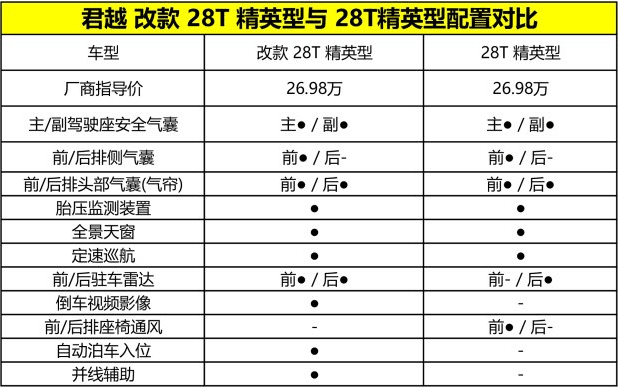
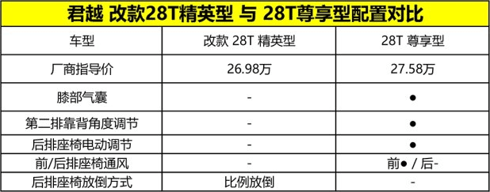
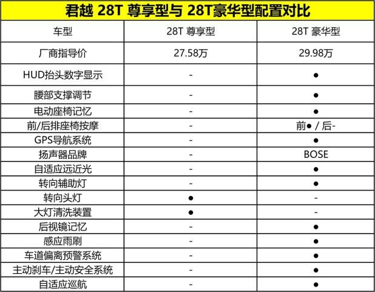

各位亲爱的网友，今天我们迎来了君越长测文章的第六期，而就在此前没多久，上汽通用对君越部分车型的配置进行了（相关新闻），并且新增了一款28T 尊享型。至此，君越目前在售的28T车型由原来的三款变为了四款，今天我就结合这半年的使用感受，为大家简单分析一下我对这几款调整配置车型的看法以及四款车型改如何选购。
“改款 28T 精英型”与“28T 精英型”：指导价不便，配置舍一增四
先来看一下最入门的28T 精英型，它是本次改款中配置调整，但价格没变的车型。指导价依旧是26.98万元，在配置调整之后为了方便区分它的名字为“改款 28T 精英型”。虽然是28T系列的入门级车型，但它的基本配置还是非常丰富的，诸如全景天窗、自动空调、定速巡航、电动座椅、座椅加热、无钥匙进入以及安吉星、中控8英寸彩色大屏、CarPlay、氙气大灯、日间行车灯……都一应俱全。（具体详细介绍，请点阅购车手册）因此，总体配置表现并不低。而从配置差异的角度来看，“改款 28T 精英型”相比原来的“28T 精英型”在配置方面有所取舍，具体请看下表：
“改款 28T 精英型”与“28T 尊享型”：多了膝部气囊、后座电动调节、前排座椅通风
“改款 28T 精英型”与“28T 尊享型”算是君越28T车系中两款新面孔了，其中前者我们上端也提了，主要增加了倒车影像、前驻车雷达以及自动泊车、并线辅助等配置。而作为新增的“28T 尊享型” 它比“改款 28T 精英型”多了6000元，指导价为27.58万元，主要增加的配置有前排膝部气囊、第二排座椅靠背角度电动调节以及前排座椅通风，这几项配置。
“28T 尊享型”与“28T 豪华型”：差价2.5万元，配置提升明显
相较于前文提到的那两款车型6000元的小幅差价，“28T 尊享型”与“28T 豪华型”的差价就大得多，达到了2.5万元。但与此同时，换来的配置数量也有了明显提升。细数一下包括：HUD抬头显示、前排座椅腰部支撑、座椅记忆、按摩以及GPS导航、BOSE音响、 LED大灯、感应雨刷、后视镜记忆、主动刹车以及自适应巡航等配置。总体来说，从配置的丰富度考虑，还是很对得起这2.5万元差价的。